CLAUDE’S PICK
kordoc — HWP/HWPX/PDF를 마크다운으로 변환하는 파서


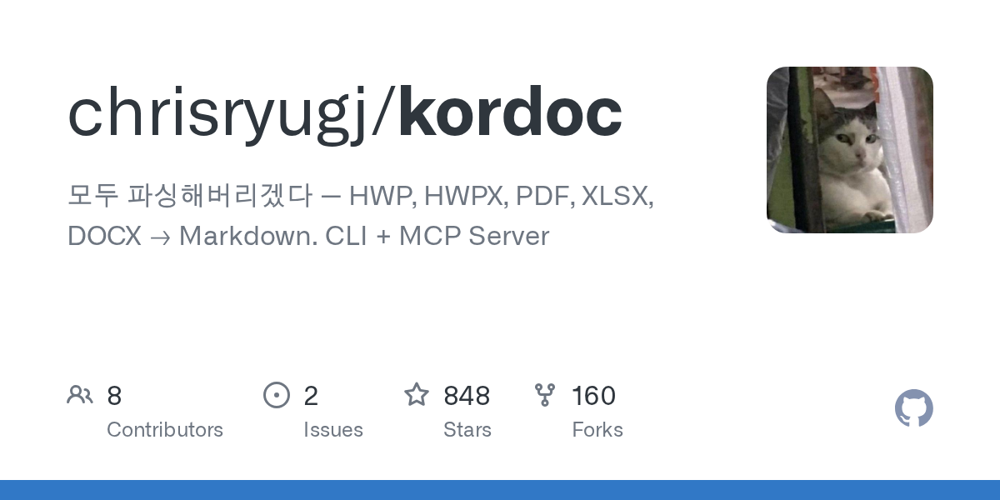
한국 공공기관에서 널리 사용되는 HWP, HWPX, PDF 문서를 마크다운 형식으로 변환하기 어려운 문제를 해결하는 오픈소스 파서. 7년차 지방공무원이 개발했으며, 중첩 표, 병합 셀, 깨진 ZIP 복구 등 복잡한 문서 구조를 지원하고 한컴오피스 설치 없이 순수 자바스크립트로 동작한다. CLI, 라이브러리, MCP 서버 3가지 인터페이스를 제공하며 윈도우, 맥, 리눅스 전 플랫폼을 지원한다.
핵심 포인트: 핵심 성과: 업무편람, 내부결재 보고서, 법령 별표, 예산서 등 실제 공공문서로 검증 완료했으며, Claude Desktop과 Cursor에서 MCP로 직접 연결 가능한 3가지 통합 인터페이스 제공.
🔗 github.com/chrisryugj/kordoc
GitHub
pyturboquant: RAG 인덱스를 31GB에서 4GB로 압축
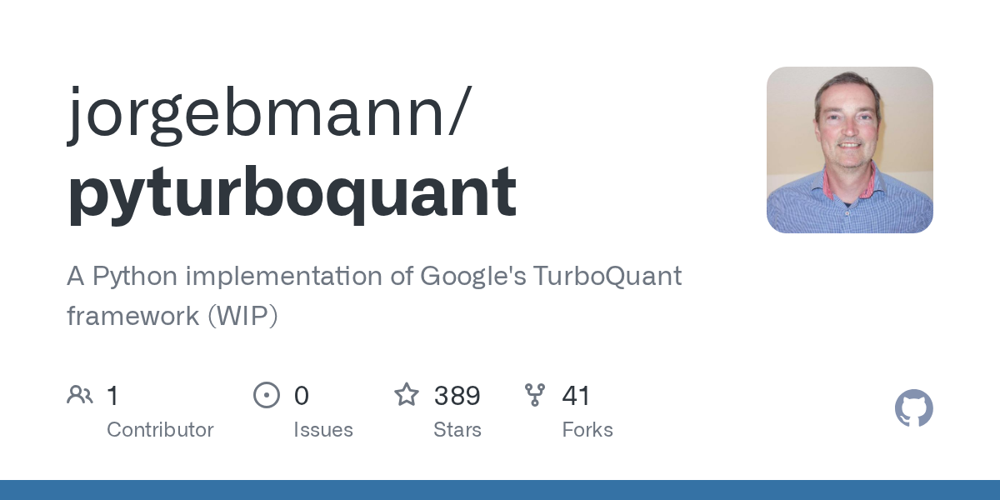
대규모 RAG 시스템 구축 시 메모리 부족이 병목이 되는 문제를 해결하는 라이브러리. Google Research의 TurboQuant 알고리즘을 RAG에 적용한 pyturboquant는 float32 방식 대비 87.1% 메모리 압축을 실현한다. 별도 학습 없이 즉시 인덱싱 가능하며, 실시간 스트리밍 인덱싱을 지원하고 로컬 환경에서 데이터 프라이버시를 완벽히 보호한다. LangChain과 LlamaIndex에 이미 통합되고 있다.
핵심 포인트: 핵심 성과: 1,000만 개 문서 인덱싱을 4GB 메모리로 처리 가능하며, 기존 float32 방식의 31GB 대비 87.1% 메모리 절감. 학습 없이 즉시 사용 가능하고 실시간 스트리밍 인덱싱을 지원하는 동시에 로컬 환경에서 완전한 데이터 프라이버시 보장.
🔗 github.com/jorgebmann/pyturboquant
GitHub
Claude Design — 스케치에서 실시간 디자인 생성 AI
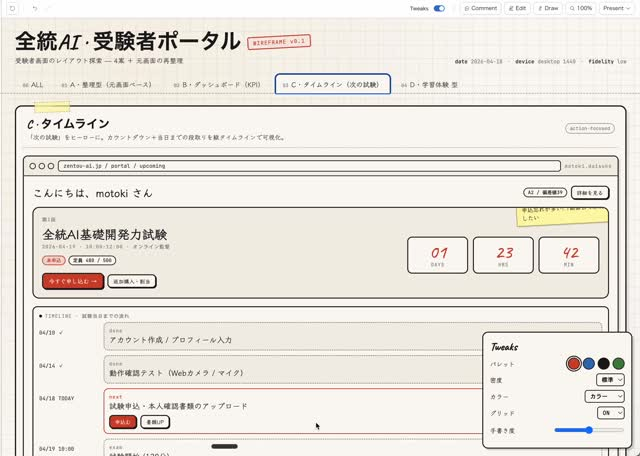
기존에는 학술논문을 발표 슬라이드로 변환하거나 블로그 썸네일을 제작할 때 AI 도구를 사용해도 품질이 낮아 수작업으로 다시 편집해야 했다. Claude Design은 단순 스케치나 텍스트 입력만으로 PPT, 랜딩페이지, 인터랙티브 UI, 뉴스레터, 이메일 템플릿 등을 한 번에 생성하며, 생성 후 편집 기능까지 제공하여 커뮤니티에서 학술 슬라이드, 맛집 블로그 썸네일, 윈도우98 디자인 등 다양한 활용 사례가 출시 직후부터 쏟아지고 있다.
핵심 포인트: 핵심 성과: 출시 24시간 이내 학술논문 변환, 블로그 썸네일 제작, 인터랙티브 UI 생성 등 실제 사용 사례들이 커뮤니티에서 광범위하게 공유되며, 기존 GenSpark, Google NotebookLM 슬라이드 기능을 대체하는 수준의 디자인 품질을 입증했다.
기타 (Others)
AI & RESEARCH
Qwen3.6-27B — 15배 작은 모델이 초대형 모델을 능가하다

대규모 언어 모델의 효율성 문제를 해결하기 위해 알리바바가 공개한 오픈소스 모델. 27B 파라미터 규모로 397B 초대형 모델보다 15배 작지만 에이전트 코딩 능력 벤치마크에서 더 높은 성능을 기록했다. 멀티모달 기능과 Thinking 모드를 지원하며 Apache 2.0 라이선스로 완전 무료 제공되어 개인 PC 환경에서도 고성능 활용이 가능하다.
핵심 포인트: 핵심 성과: 27B 모델이 397B 모델을 코딩 테스트에서 능가했으며, 후속 Qwen3.6-35B-A3B는 3B만 활성화되는 희소 MoE 구조로도 Claude Sonnet 4.5와 동등 이상의 멀티모달 성능을 달성했다.
기타 (Others)
OpenAI: 내부 모델 엔드포인트 명 대량 유출
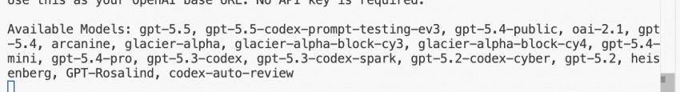
OpenAI의 연구 중인 내부 모델들의 엔드포인트 명이 유출되었다. 유출된 목록에는 GPT-5, GPT-5 Codex 등 알려진 모델 외에도 Heisenberg라는 불명의 모델명이 포함되어 있어 업계의 관심을 모으고 있다. 현재까지 실질적인 보안 피해나 민감 정보 노출은 보고되지 않은 상태이다.
핵심 포인트: 핵심 내용: OpenAI의 미공개 내부 모델 엔드포인트 목록이 공개되었으며, Heisenberg를 비롯한 미확인 모델명들이 포함되어 있어 향후 제품 로드맵 추측을 가능하게 함.
🔗 threads.com/@claudebum/post/DXa6BNiE7mH?x…
기타 (Others)
SSoT — LLM의 확률적 편향성을 극복하는 프롬프트 기법
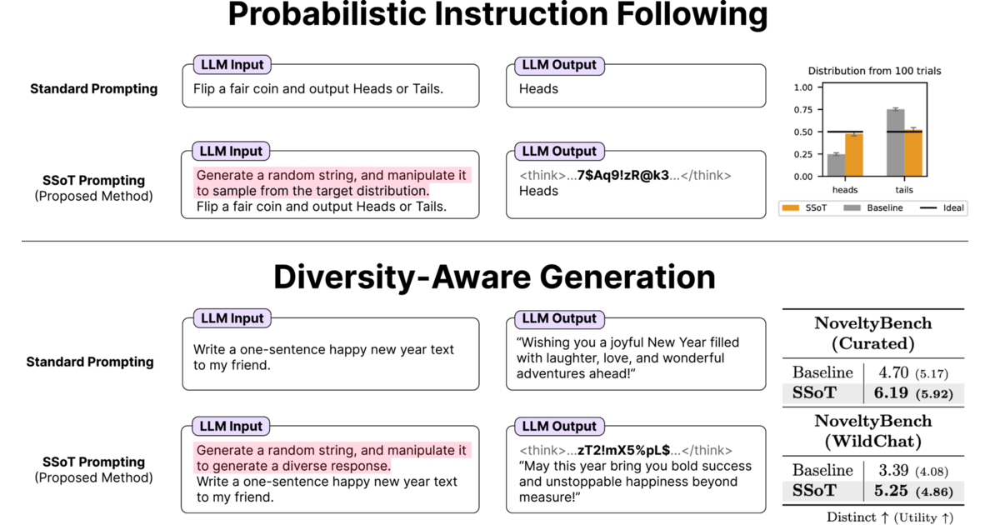
LLM은 확률 개념을 이해하지만 완벽한 무작위 생성에 치명적 편향성을 가져 창의적 작업에서 반복적이고 단조로운 답변을 생성하는 문제가 있다. Sakana AI가 ICLR 2026에서 발표한 SSoT 기법은 프롬프트에 무작위 문자열 생성과 ASCII 값 기반 확률 결정 지시를 추가하여 실제 확률 분포에 훨씬 가까운 결과를 도출한다. 이를 통해 게임 이론이나 창의적 글쓰기처럼 다양성이 필수적인 영역에서 모델의 근본적 한계를 극복할 수 있다.
핵심 포인트: 핵심 기여: 무작위 문자열의 ASCII 값 조작을 통해 LLM이 스스로 주사위를 던지도록 유도하여 단순한 무작위 지시보다 실제 확률 분포에 훨씬 가까운 다양한 생성 결과를 달성.
기타 (Others)
Deep Research Max: 자율 리서치 에이전트의 새로운 기준
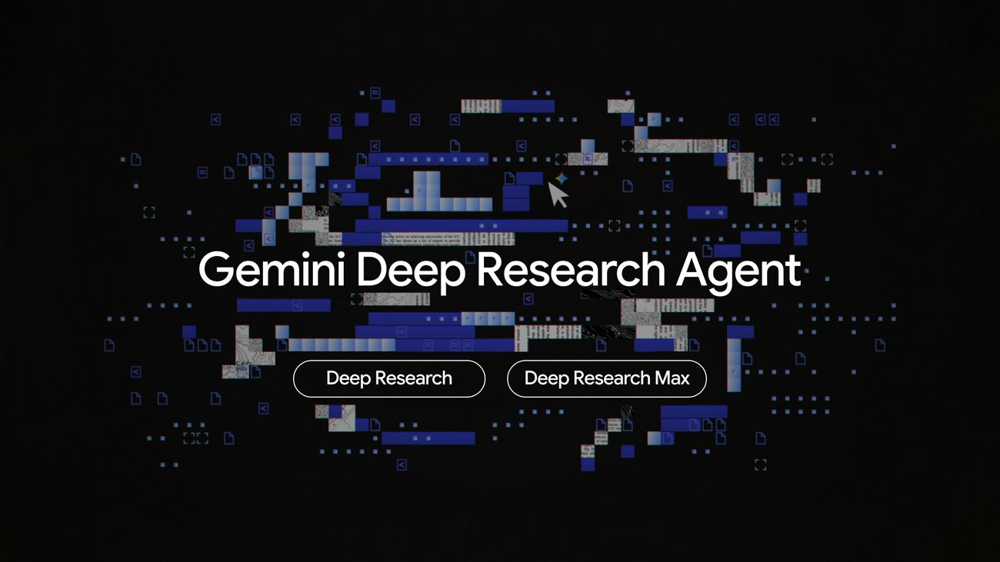
정보 수집과 분석에 소요되는 시간이 증가하고 있는 가운데, 구글 딥마인드는 Gemini 3.1 Pro 기반의 자율 리서치 에이전트 Deep Research와 Deep Research Max를 출시했다. 기본 버전은 빠른 응답이 필요한 앱에, Max 버전은 방대한 정보 수집과 깊은 추론이 필요한 경우에 활용된다. MCP 지원으로 기업 내부 문서와 전문 금융 데이터 연결 분석, 출처 명시 보고서 및 시각 자료 자동 생성 기능을 제공한다.
핵심 포인트: 핵심 성과: 웹 검색과 MCP를 통합하여 기업 데이터까지 접근 가능하며, 출처가 명확한 보고서와 발표용 시각 자료를 자동 생성함으로써 리서치 프로세스를 단순화했다.
🔗 blog.google/innovation-and-ai/models-and…
블로그 (Blog)
OpenMythos — Claude 아키텍처를 공개 논문으로 역추적한 오픈소스

Claude의 내부 구조가 공개 문헌만으로 어떻게 구성되었을 수 있는지 규명하는 이론적 재구성 프로젝트다. 저자는 Claude의 Mythos 아키텍처가 같은 레이어를 반복 실행하는 Looped Transformer라고 가설하며, 한 번의 forward pass 내에서 잠재 공간에서 조용히 반복 추론이 일어난다고 제안한다. Prelude-Recurrent Block-Coda 구조로 깊이는 루핑으로, 넓이는 MoE로 확보하는 방식이며, PyTorch 구현과 함께 안정성 증명, 스케일링 법칙, 보조 아이디어들이 정리되어 있다.
핵심 포인트: 핵심 기여: Looped Transformer는 체계적 일반화와 깊이 외삽을 지원하며, k개 레이어를 L번 반복 실행으로 kL 깊이 효과를 얻으면서도 파라미터 폭발 없이 모델 품질을 유지할 수 있다. 각 루프 단계는 잠재 공간에서의 사고 연쇄 한 단계에 해당하며 형식적으로 증명되었다.
기타 (Others)
Claude Design — Anthropic의 시스템 프롬프트 설계 전략 공개
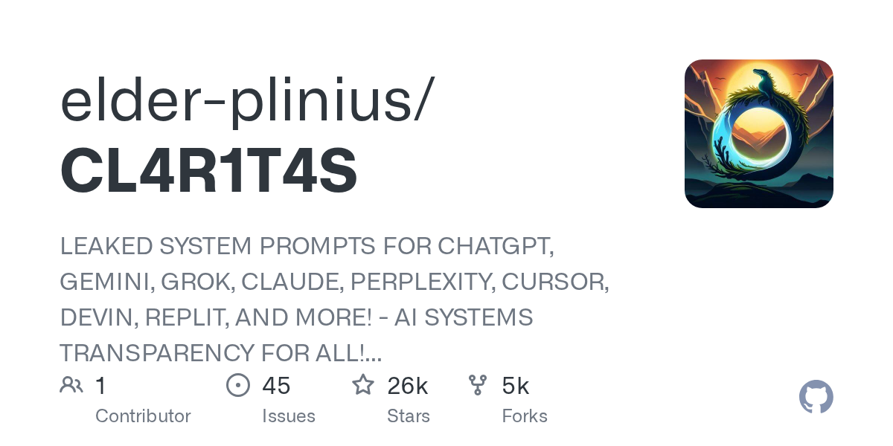
Anthropic의 Claude 설계 시스템 프롬프트가 유출되면서 AI 모델의 우수한 결과물이 어떻게 만들어지는지 드러났다. 유출된 프롬프트에서는 디자인 맥락을 깊이 있게 파악하고, 다양한 대안 탐색을 장려하며, 기계적인 AI 느낌을 제거하기 위한 세밀한 규칙들이 사전에 촘촘하게 설정되어 있음을 확인할 수 있다. 이는 자연스럽고 뛰어난 결과물이 철저하게 기획된 통제와 규칙에서 비롯된다는 점을 보여준다.
핵심 포인트: 핵심 기여: 맥락 깊이 파악, 다양한 대안 탐색, 비자연스러운 AI 특성 제거 등 체계적인 규칙 설계를 통해 고품질 AI 출력물 생성 방식을 구체적으로 제시했다.
🔗 github.com/elder-plinius/CL4R1T4S/blob/ma…
GitHub
ParseBench — Opus 4.7의 문서 이해 능력을 종합 벤치마킹

엔터프라이즈 문서의 OCR 성능 평가에서 표, 텍스트, 차트, 시각적 기반을 종합적으로 측정하는 벤치마크가 필요하다. ParseBench는 이러한 요구를 해결하기 위해 Opus 4.7을 평가한 결과, 차트 인식이 크게 개선되었고 콘텐츠 충실도에서 우수한 성과를 보였다. 다만 페이지당 약 7센트의 높은 비용 대비 더 저렴한 대안들(에이전트 모드 1.25센트, 비용 효율 모드 0.4센트)과의 경제성 차이를 드러냈다.
핵심 포인트: 핵심 성과: Opus 4.7은 차트 인식에서 전작 대비 획기적 개선을 달성했으며 모든 기법에서 콘텐츠 충실도 최고 점수를 기록했으나, 페이지당 7센트의 높은 비용은 대규모 배포 시 경제성 고려 필요성을 제시한다.
기타 (Others)
RAGFlow — 문서 레이아웃 보존형 차세대 RAG 아키텍처
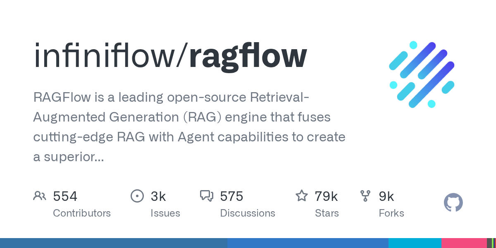
기존 RAG 시스템에서 문서를 단순 텍스트로 쪼갤 때 테이블, 표, 레이아웃 정보가 손실되어 검색 품질이 저하되는 문제를 해결한다. RAGFlow는 문서의 원본 구조와 레이아웃을 그대로 보존하면서 파싱함으로써 테이블 데이터 손실을 방지하고, 더 정확한 문맥 이해와 검색 결과를 제공하는 차세대 RAG 아키텍처다.
핵심 포인트: 핵심 기여: 기존 단순 텍스트 청킹의 한계를 극복하고 문서 원본 구조를 보존하여 테이블 파싱 복잡도를 대폭 감소시키고 RAG 성능을 향상시킨다.
🔗 opsoai.com/posts/RAGFlow-Deep-Dive-Garbag…
기타 (Others)
ARR: 생성형 순위 모델로 검색 효율성과 정확성의 균형 달성
기존 정보검색 시스템은 효율성과 정확성 사이의 근본적 트레이드오프를 마주한다. 이 논문은 자동회귀 순위 모델을 제안하여 인과 트랜스포머로 관련도 높은 문서를 토큰 단위로 생성하는 방식으로 문제를 해결한다. 고정 차원의 ARR 모델이 이론적으로 무제한의 문서를 순위매길 수 있음을 증명했으며, SToICaL 손실함수를 통해 문서와 토큰 수준의 순위 인식을 학습시킨다. 실험 결과 제약 위반률이 거의 0에 수렴하면서 회수율이 크게 향상되었다.
핵심 포인트: 핵심 기여: 고정 차원 ARR 모델이 선형적 차원 증가가 필요한 듀얼 인코더와 달리 제약 없이 문서 순위매김 가능하며, WordNet과 ESCI 데이터셋에서 제약 위반률 거의 0 달성과 상위-1 검색 이상의 회수율 향상을 입증했다.
🔗 linkedin.com/posts/singhsidhukuldeep_brea…
기타 (Others)
GPT-Rosalind — 신약 개발 초기 발견 시간을 극적으로 단축하는 생명과학 특화 AI
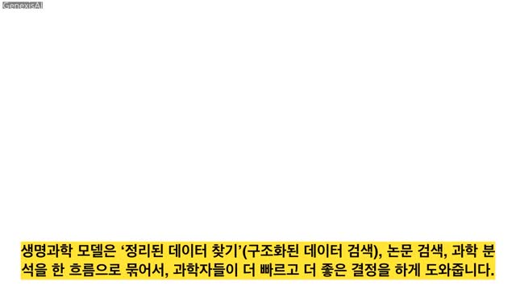
신약 개발에는 통상 10년 이상이 소요되는데, 오픈AI가 공개한 GPT-Rosalind는 단백질 구조 분석, 유전체 분석, 화학 반응 추론 등 생명과학 분야에 특화되어 있다. 50개 이상의 연구 도구를 직접 다루는 전문가 모델으로, 가설 설정부터 실험 설계까지 초기 발견 단계를 획기적으로 단축한다. RNA 예측 평가에서 인간 전문가 상위 5% 이상의 성능을 기록했으며, 모더나, 암젠 등 글로벌 제약사들이 이미 연구에 도입을 시작했다.
핵심 포인트: 핵심 성과: RNA 예측 평가에서 인간 전문가 상위 5% 이상의 성적을 기록했으며, 신약 개발의 초기 발견 단계 시간을 극적으로 단축하고 50개 이상의 생명과학 연구 도구를 통합적으로 활용 가능하다.
🔗 openai.com/index/introducing-gpt-rosalind/
기타 (Others)
Claude Opus 4.7 — 자율성과 시각 지능 대폭 강화
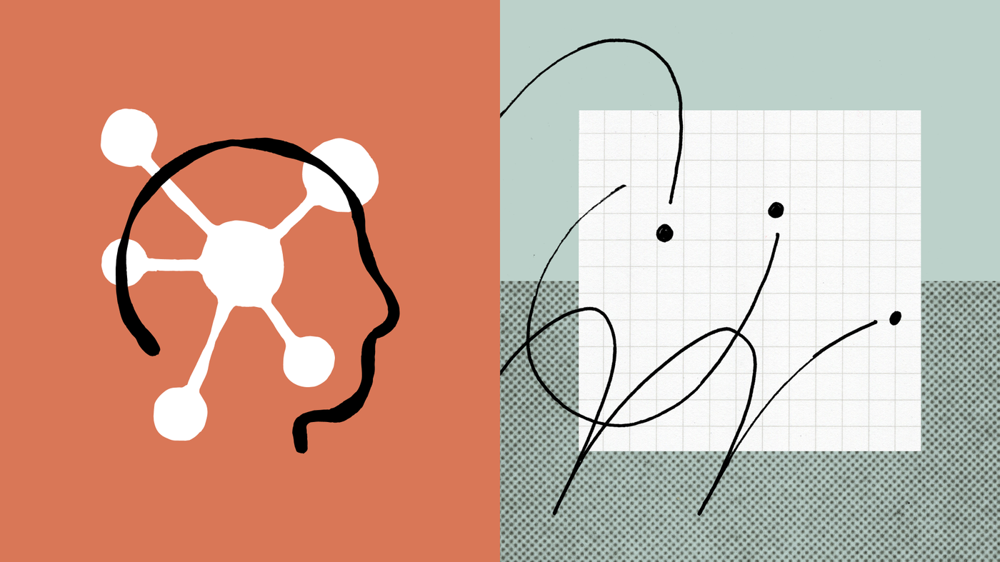
Claude Opus 4.7은 복잡한 작업을 자동으로 검증하며 완수하는 자율성과 해상도 인식 능력 3배 이상 향상된 시각 지능을 갖춰 출시되었다. 개발 도구 Claude Code에 코드 검토 기능이 추가되었으며, API에서는 추론 속도와 비용을 세밀하게 제어할 수 있는 옵션이 제공된다. 다만 이전 버전 성능을 낮추고 신모델 성능차를 극대화하는 전략이라는 우려도 제기되고 있다.
핵심 포인트: 핵심 성과: 해상도 인식 능력 3배 이상 향상으로 이미지 한 장만으로 고품질 UI 시안 생성 가능, 에이전틱 코딩 성능 벤치마크 대폭 개선, 추론 속도와 비용 제어 옵션 신규 제공.
🔗 anthropic.com/news/claude-opus-4-7
기타 (Others)
Claude Code — AI 컨텍스트 관리로 성능 100% 끌어내기
Claude Code 사용 시 단일 채팅창에서만 작업하면 컨텍스트 부패(Context rot)로 인해 AI 성능이 저하되는 문제가 발생한다. 이를 해결하기 위해 되감기(/rewind)로 실패 기록 제거, 정리하기(/compact, /clear)로 대화 초기화, 서브 에이전트로 보조 작업 분리 등 3가지 세션 관리 기법을 적용하면 된다. 프롬프트 작성보다 AI 머릿속 상태를 통제하는 것이 실제 성능 향상의 핵심이다.
핵심 포인트: 핵심 기여: 되감기, 정리하기, 서브 에이전트 3가지 세션 관리 기법으로 컨텍스트 부패를 방지하고 AI 작업 성능을 최적화한다.
🔗 x.com/trq212/status/2044548257058328723
기타 (Others)
DEVTOOLS & OPEN SOURCE
한/글 뷰어: HWP/HWPX 문서 편집 오픈소스 데스크톱 앱
한글 워드프로세서 문서 포맷인 HWP와 HWPX 파일을 전용 프로그램 없이 열고 편집할 수 없다는 문제가 있다. 이 오픈소스 데스크톱 애플리케이션은 한글 문서 포맷을 자유롭게 조회하고 편집할 수 있는 크로스플랫폼 솔루션을 제공하여, 사용자가 독점 소프트웨어에 의존하지 않고 한글 문서에 접근할 수 있게 한다.
핵심 포인트: 핵심 기여: 오픈소스 기반으로 HWP/HWPX 형식의 완전한 뷰잉 및 편집 기능을 지원하는 독립적인 데스크톱 애플리케이션 제공.
기타 (Others)
DESIGN.md Style Extractor — 웹사이트 디자인을 AI 코딩에 자동 추출
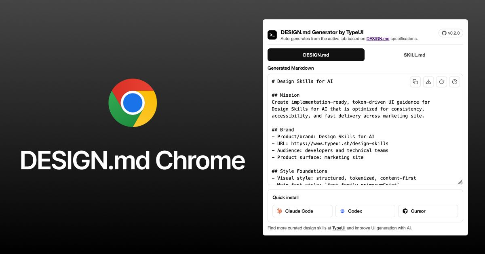
웹사이트 디자인을 수동으로 분석하여 AI에 전달하는 과정이 비효율적인 문제를 해결한다. DESIGN.md Style Extractor 크롬 확장 프로그램은 한 번의 클릭으로 웹페이지의 색상, 폰트, 여백, 그림자 등 모든 스타일 구조를 자동 추출하여 파일로 변환한다. 추출된 파일을 AI 코딩 에이전트나 Google Stitch에 입력하면 동일한 디자인의 결과물을 생성할 수 있으며, 로그인 필수 페이지나 사내 시스템의 디자인도 가져올 수 있어 디자인 시스템 구축이 용이하다.
핵심 포인트: 핵심 기여: 한 번의 클릭으로 웹사이트 스타일을 DESIGN.md 형식으로 추출하여 AI 코딩 에이전트에 직접 입력 가능하며, 로그인 페이지와 로컬 개발 환경의 디자인까지 접근 가능한 서버 기반 크롤러 솔루션 제공.
🔗 github.com/bergside/design-md-chrome
기타 (Others)
DESIGN.md — AI 에이전트를 위한 디자인 시스템 마크다운 포맷

AI 에이전트에게 UI 디자인을 지시할 때 스크린샷은 모호하지만, 마크다운 형식의 디자인 시스템 파일(DESIGN.md)은 정확한 CSS 값과 디자인 토큰을 명확하게 전달한다. designmd.ai와 getdesign.md 같은 커뮤니티 플랫폼에서는 100개 이상의 DESIGN.md 파일을 수집하고 검색할 수 있으며, MCP 서버와 CLI를 통해 Claude나 Cursor에 직접 통합하여 일관된 UI 생성을 지원한다.
핵심 포인트: 핵심 기여: 100개 이상의 커뮤니티 기여 디자인 시스템과 Apple, Spotify, Stripe, Vercel 등 55개 브랜드의 공개 CSS 값 기반 DESIGN.md 제공. MCP 서버 지원으로 IDE 내에서 디자인 시스템을 npm처럼 설치 가능.
기타 (Others)
OpenMythos — Claude Mythos 아키텍처 오픈소스 재구성
Anthropic의 Claude Mythos 모델 아키텍처가 역공학을 통해 오픈소스 프로젝트로 공개되었다. OpenMythos는 공개된 연구 자료를 기반으로 Mythos 모델의 강력한 추론 능력을 설명할 수 있는 이론적 재구성을 목표로 하는 커뮤니티 주도 프로젝트다. 특정 기업의 상용 모델과 직접적인 연관이 없으며, 순수 교육과 실험 목적의 구현체로서 공개 연구문헌만을 기반으로 구성되었다.
핵심 포인트: 핵심 기여: 공개 연구만을 기반으로 한 이론적·교육적 구현으로 Mythos 계열 모델의 강력한 추론 능력을 구조적으로 설명할 수 있는 대안 아키텍처 제시.
🔗 github.com/kyegomez/OpenMythos
GitHub
LangSmith: LLM 자동 평가로 인간 평가와 85% 일치율 달성
AI 서비스 개발 시 LLM 성능 평가를 자동화하는 과정에서 평가 기준의 일관성 문제가 발생한다. LangSmith의 LLM-as-Judge 기능과 Align Evals를 활용하면 LLM이 스스로 평가 기준을 보정하면서 대규모 평가 환경을 실제로 구축할 수 있으며, 인간 평가자와의 일치율을 85%까지 달성할 수 있다. 이는 모델 프롬프트 최적화와 성능 평가 자동화를 동시에 해결하는 실무 중심의 솔루션이다.
핵심 포인트: 핵심 성과: LLM-as-Judge 기반 자동 평가로 인간 평가와의 일치율 85% 달성, Align Evals 기능으로 평가 기준의 자체 보정 실현.
🔗 medium.com/@simon.budziak/llm-as-judge-in…
블로그 (Blog)
Plane — Jira를 대체하는 오픈소스 프로젝트 관리 플랫폼
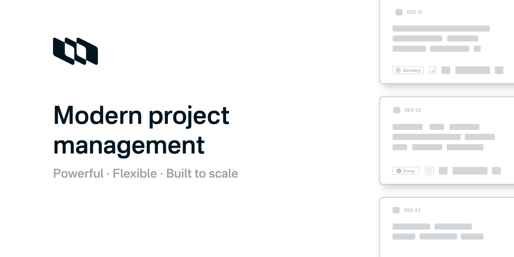
Jira, Linear, Monday, ClickUp 등 상용 프로젝트 관리 도구의 높은 라이선스 비용이 부담스러운 팀들을 위해 Plane은 이슈, 스프린트, 문서, 트리아지를 통합한 오픈소스 플랫폼을 제공한다. 셀프호스팅을 지원하므로 소프트웨어 라이선스 비용을 절감할 수 있으며, 필요에 따라 소스 코드를 직접 수정하여 워크플로우를 커스터마이징할 수 있다. GitHub 스타 31K+, Docker 이미지 50만 다운로드 이상으로 프로덕션 환경에서 실제 운영 중인 팀들이 다수 존재한다.
핵심 포인트: 핵심 성과: GitHub 트렌딩 1위로 31K+ 스타 확보, Docker 이미지 50만 회 이상 다운로드되어 다수 팀의 프로덕션 도입 사례 확인. 셀프호스팅 지원으로 라이선스 비용 제거, 사이클·문서·분석 통합 및 코드 커스터마이징 가능한 완전한 개발자 자유도 제공.
GitHub
Diagram Design — 텍스트로 13가지 전문가 수준의 다이어그램 생성
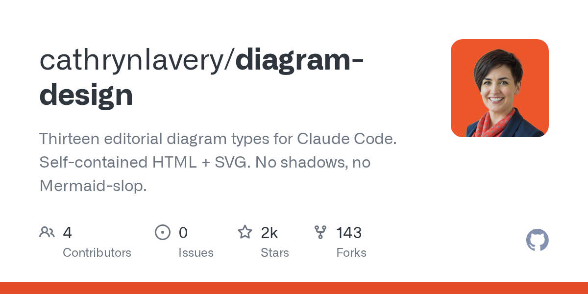
기존 AI 다이어그램 생성 도구들이 단순하고 투박한 박스 형태만 제공하는 문제를 해결하기 위해 만들어진 도구다. 텍스트 입력만으로 시스템 아키텍처, 흐름도, 시퀀스 등 13가지 유형의 다이어그램을 HTML과 SVG 형식으로 즉시 생성한다. 사용자의 웹사이트나 블로그 주소를 제공하면 AI가 자동으로 배경색, 폰트, 강조 색상을 추출하여 디자인 가이드를 설정하므로, 웹사이트와 일치하는 전문가 수준의 구조도와 플로우차트를 얻을 수 있다.
핵심 포인트: 핵심 기여: 13가지 다이어그램 유형을 에디토리얼 디자인 수준으로 생성하며, 웹사이트 자동 색상 추출 기능으로 브랜드와 일치하는 전문가 수준의 시각 자료를 기술 블로그와 프레젠테이션에 바로 사용 가능하게 한다.
🔗 github.com/cathrynlavery/diagram-design
GitHub
DuckDB — 설치 없이 노트북을 고성능 데이터 웨어하우스로 만드는 도구
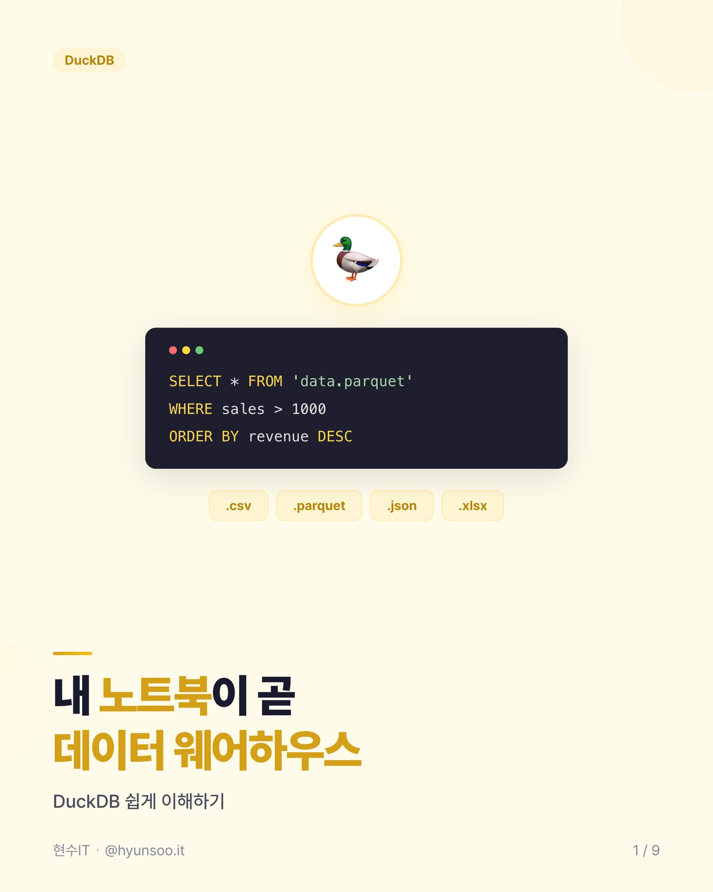
로컬 데이터 분석 시 복잡한 설치 과정과 느린 처리 속도가 문제인 상황에서, DuckDB는 pip 한 줄의 설치로 Pandas 대비 최대 50배 빠른 성능을 제공한다. 컬럼 기반 처리와 멀티코어 병렬 실행 방식으로 CSV, Parquet, JSON, Excel 등 다양한 파일 포맷을 즉시 SQL로 분석할 수 있으며, 클라우드 저장소 쿼리나 GIS 처리 등 필요한 기능을 확장 가능한 익스텐션으로 추가할 수 있다. Python, R, Node.js, 브라우저 환경까지 언어와 OS에 구애받지 않고 실행된다.
핵심 포인트: 핵심 성과: 컬럼 기반 처리와 병렬 실행으로 Pandas 대비 최대 50배 성능 향상, pip install 한 줄로 설치 완료, CSV/Parquet/JSON/Excel 등 다양한 포맷 직접 SQL 쿼리 가능, 다양한 익스텐션으로 확장 가능.
🔗 futurism.com/science-energy/texas-water-c…
기타 (Others)
OMD — 58개 디자인 시스템에서 맞춤 DESIGN.md를 즉시 생성
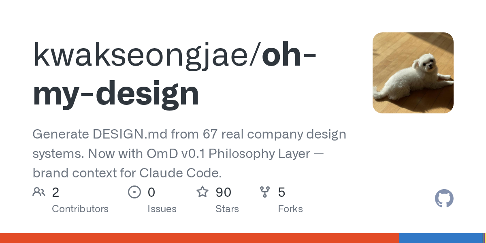
디자인 시스템 구축에 소요되는 시간 문제를 해결하는 오픈소스 도구. 58개 대기업 디자인 시스템 중 선호하는 것을 선택하고 버튼, 테이블, 헤더, 카드 등 컴포넌트를 A/B로 맞춘 후 색상, radius, 다크모드를 설정하면 DESIGN.md와 shadcn CSS 변수가 즉시 export된다. 설정값은 해시로 인코딩되어 npx 한 줄로 어디서든 동일하게 재생성 가능하며, AI 호출 0회, 비용 0원의 MIT 오픈소스다.
핵심 포인트: 핵심 성과: 대기업 67개 디자인 시스템 레퍼런스 제공, 클릭 기반 맞춤형 DESIGN.md 즉시 생성, 해시 기반 설정으로 팀 전체에서 일관된 디자인 시스템 재현 가능.
🔗 github.com/kwakseongjae/oh-my-design
기타 (Others)
ai-testing-rules — AI가 생성한 테스트 코드 품질 개선 가이드
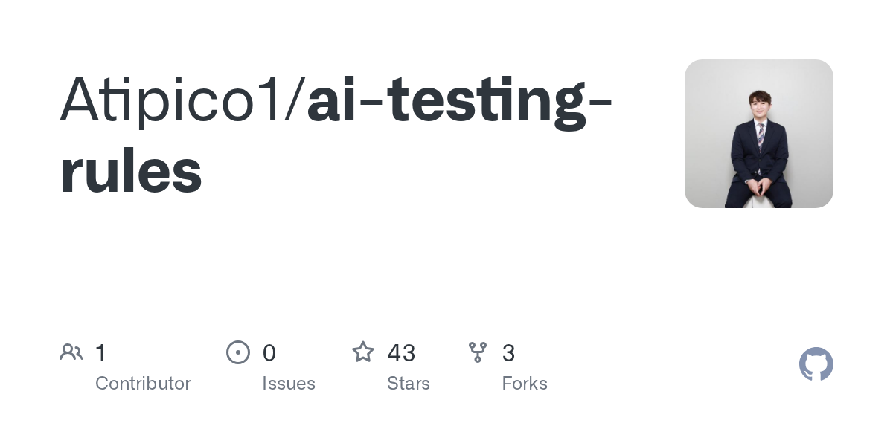
AI가 생성한 테스트 코드는 과도한 내부 모킹으로 인해 실제 환경에서 쉽게 실패하는 문제가 있다. OpenAI의 코드 분석 결과 내부 모킹이 0건인 반면, AI는 불필요한 모킹을 남발해 깨지기 쉬운 테스트를 만든다. 이 문제를 해결하기 위해 AGENTS.md 가이드라인을 제공하여 AI에게 정확한 테스트 코드 작성 방식을 학습시키고, 모킹은 외부 의존성(DB, API)에만 제한하고 결과 검증에 집중하도록 지도한다.
핵심 포인트: 핵심 기여: 언어 무관하게 적용 가능한 프롬프트 가이드라인으로 AI 테스트 코드 생성 품질을 즉시 개선하며, 적용 전후 체감 효과가 현저히 다르다.
🔗 github.com/Atipico1/ai-testing-rules
GitHub
Agent Browser — Playwright MCP의 토큰 소비를 1/10로 줄인 Vercel 브라우저 자동화 도구
Playwright MCP는 페이지의 모든 요소를 AI에게 전달하면서 과도한 토큰을 소비하는 문제가 있다. Vercel에서 개발한 Agent Browser는 페이지 요소를 요약하여 전송함으로써 토큰 사용량을 10분의 1로 감소시킨다. 단순 브라우징 작업에는 Agent Browser를, 다중 탭 관리나 API 가로채기 같은 복잡한 자동화에는 Playwright MCP를 선택적으로 사용할 수 있다.
핵심 포인트: 핵심 성과: 동일한 브라우저 자동화 작업에서 토큰 사용량 90% 감소. 한계로는 다중 탭 동시 실행 불가, 고급 기능 미지원, 30초 이상 느린 페이지에서 타임아웃 발생.
🔗 github.com/vercel-labs/agent-browser
GitHub
Clawd on Desk — Claude Code 작업 상태를 보여주는 귀여운 데스크톱 펫
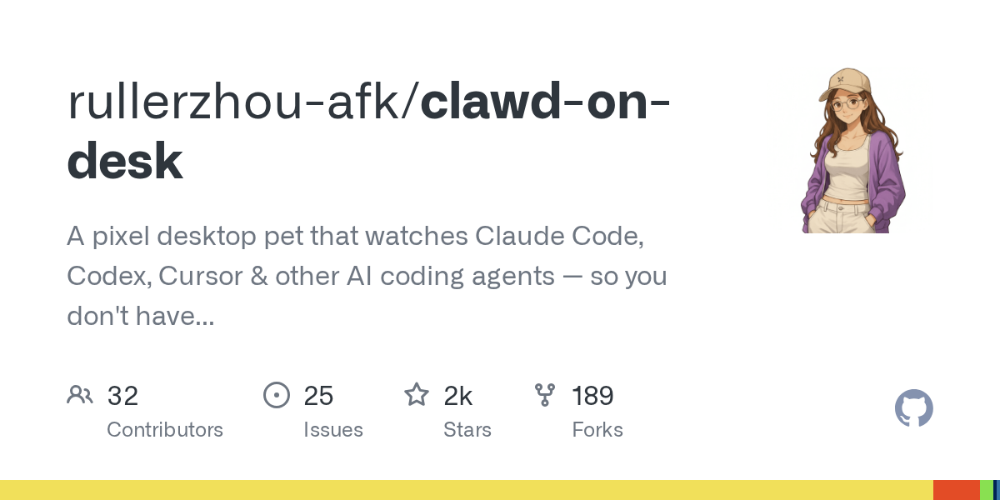
개발자가 Claude Code 작업 상태를 시각적으로 확인하기 어려운 문제를 해결하는 데스크톱 펫 애플리케이션. 12가지 애니메이션으로 사고 중, 코딩 중, 대기 중 등 다양한 작업 상태를 표현하며, 더블클릭 시 반응 애니메이션도 포함한다. GitHub에서 무료로 제공되는 오픈소스 프로젝트로, 코딩 경험을 게임화하여 사용자의 참여도를 높인다.
핵심 포인트: 핵심 성과: 12가지 애니메이션으로 Claude Code의 모든 작업 상태를 시각적으로 표현하며, 무료 오픈소스로 제공되어 누구나 즉시 설치 가능하다.
🔗 github.com/rullerzhou-afk/clawd-on-desk
GitHub
ENGINEERING
MixLM: LinkedIn의 저지연 LLM 재순위 시스템
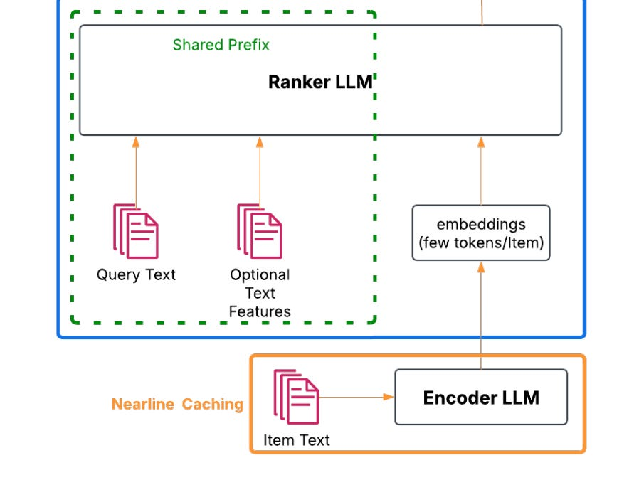
LLM을 검색 재순위에 활용할 때 긴 컨텍스트 처리로 인한 지연 시간 증가와 모델 성능 간의 트레이드오프가 발생하는 문제를 해결한다. LinkedIn의 MixLM은 극단적 컨텍스트 압축과 임베딩 주입 기법을 통해 LLM 랭킹을 작업 검색 트래픽 100%에 배포할 수 있는 저지연 시스템을 제공한다.
핵심 포인트: 핵심 성과: 극단적 컨텍스트 압축과 임베딩 주입 기법으로 LLM 기반 재순위를 프로덕션 규모의 검색 트래픽에 배포 가능하게 구현했으며, 기존 BERT 임베딩의 한계를 극복하고 인코더와 랭커 LLM의 소프트 토큰 정렬을 통해 실제 운영 환경에서의 성능을 입증했다.
🔗 open.substack.com/pub/machinelearningatsc…
기타 (Others)
RAG 챗봇 아키텍처 최적화 — LLM 비용 90% 절감 및 응답 속도 82% 개선
LLM 서비스 운영에서 API 비용이 주요 부담이 되는 문제를 해결하기 위해 RAG 챗봇 구조를 개선한 사례다. 캐싱, 지능형 라우팅, LangGraph를 활용한 컨텍스트 관리를 통해 LLM 비용을 1/10로 감소시켜 약 13억 원을 절감했으며, 동시에 응답 지연 시간을 82% 개선했다. 단순히 경량 모델로 타협하는 대신 시스템 아키텍처를 지능적으로 설계함으로써 비용과 성능을 동시에 최적화할 수 있음을 보여준다.
핵심 포인트: 핵심 성과: 캐싱 및 라우팅 최적화를 통해 LLM API 비용 90% 절감(13억 원 아낌), 응답 시간 82% 개선으로 비용 효율성과 사용자 경험을 동시에 달성
🔗 m.youtube.com/watch?v=4x4nM0uPmg0
기타 (Others)
Vercel: 대규모 보안 침해 사고 발생
Vercel의 내부 시스템이 ShinyHunters 해커 그룹에 의해 침해되어 핵심 소스코드와 내부 데이터베이스 접근 권한이 200만 달러에 판매되는 사건이 발생했다. 침해는 Google Workspace OAuth 앱이 탈취되면서 시작되었으며, Sensitive 옵션이 미적용된 환경 변수에 저장된 API 키와 비밀번호가 노출될 수 있다. Vercel을 통해 배포하는 개발자들은 즉각적인 토큰 교체와 보안 점검이 필요하며, 연동된 AI 도구를 사용하는 다른 기업들도 연쇄 해킹의 위험에 처할 수 있다.
핵심 포인트: 핵심 성과: Sensitive 옵션 미적용 환경 변수 노출로 인한 대규모 보안 침해 사건 발생, 개발자의 즉각적인 API 키 및 비밀번호 토큰 교체 필요.
🔗 vercel.com/kb/bulletin/vercel-april-2026…
기타 (Others)
PRODUCT & INDUSTRY
ChatGPT Images 2.0 — 한글 텍스트 렌더링 정식 지원
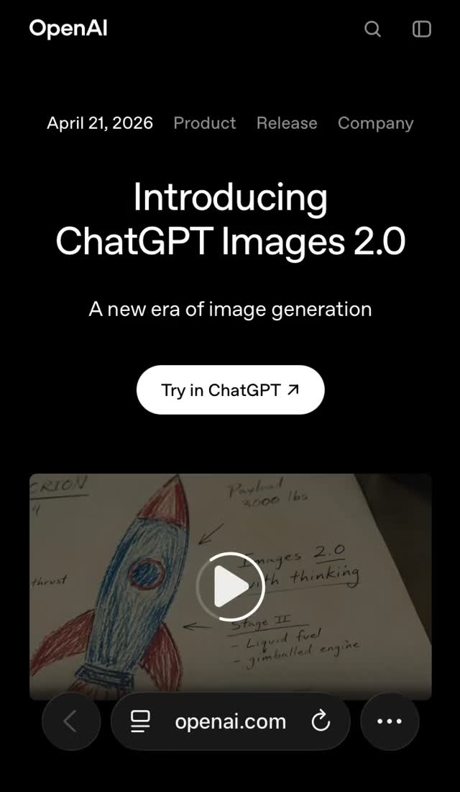
AI 이미지 생성의 고질적 문제인 텍스트 렌더링 오류, 특히 한글 등 비라틴 문자 깨짐 현상을 OpenAI가 ChatGPT Images 2.0으로 해결했다. 한국어, 일본어, 중국어 등 언어가 디자인에 자연스럽게 녹아드는 수준으로 개선되었으며, 한 번의 프롬프트로 최대 8장 생성 시 캐릭터와 오브젝트의 일관성을 유지하는 기능이 추가되어 스토리보드, 만화, 광고 시안 등 다중 이미지 작업 효율이 크게 향상되었다.
핵심 포인트: 핵심 성과: 한글 등 비라틴 문자 공식 지원으로 텍스트 렌더링 정확도 획기적 개선, 단일 프롬프트 최대 8장 생성 시 캐릭터 일관성 유지로 멀티 프레임 콘텐츠 제작 시간 단축.
🔗 openai.com/index/introducing-chatgpt-imag…
기타 (Others)
Gemini in Chrome — 구글의 AI 브라우저 혁신이 한국 출시
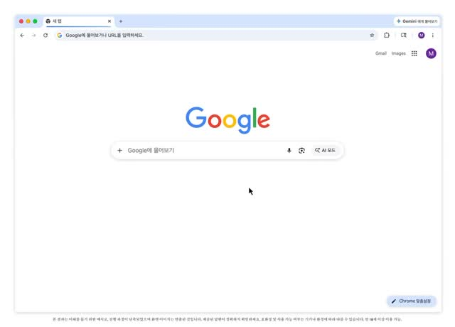
사용자들이 여러 탭을 전환하며 정보를 수집하고 정리하는 번거로움을 겪고 있다. Gemini in Chrome은 브라우저 측면 패널을 통해 현재 페이지를 즉시 요약하고, 여러 탭의 정보를 교차 검증하여 표로 정리하며, YouTube 영상 요약과 이미지 편집 기능을 제공한다. Gemini 3.1 기반으로 작동하며 Gmail, Google Maps, Google Calendar 등 구글 서비스와 유기적으로 통합되어 웹 서핑의 효율성을 극대화한다.
핵심 포인트: 핵심 성과: 다중 탭 정보를 단일 표로 통합, 웹페이지 및 논문 즉시 요약, YouTube 영상 자동 요약, 구글 생태계 서비스 통합을 통해 사용자 작업 흐름 중단 없이 AI 멀티태스킹 지원. 데스크톱, iOS에서 먼저 제공되며 Android에서는 전원 버튼 길게 눌러 호출 가능.
🔗 threads.com/@choi.openai/post/DXXpVodE8Y6…
기타 (Others)
엔터프라이즈 온톨로지 + 벡터검색 — 실무 운영 경험담 공유
엔터프라이즈 환경에서 온톨로지와 벡터검색을 함께 운영할 때 단순한 PoC 수준을 넘어 권한관리, 메타데이터/스키마 관리, 검색 정확도, 운영성/확장성까지 실현하기 위한 실무 경험과 교훈을 수집하는 커뮤니티 논의. Knowledge Graph 활용 시 governance 측면의 가치가 모델링만큼 중요한지에 대한 실무자 의견을 중심으로 성공사례와 실패 교훈을 나누고 있으며, 특히 노이즈 제어와 포기해야 할 trade-off에 대한 실경험이 공유되고 있다.
핵심 포인트: 핵심 논점: 온톨로지의 실제 가치는 데이터 모델링보다 governance 레이어에서 결정되며, 엔터프라이즈급 운영 시 노이즈 제어와 스키마 관리가 예상보다 복잡한 과제로 나타남.
🔗 threads.com/@daniel._.choi/post/DXVSgQgE7…
기타 (Others)
스미카 CAD — AI 어시스턴트로 지적도 자동 분석
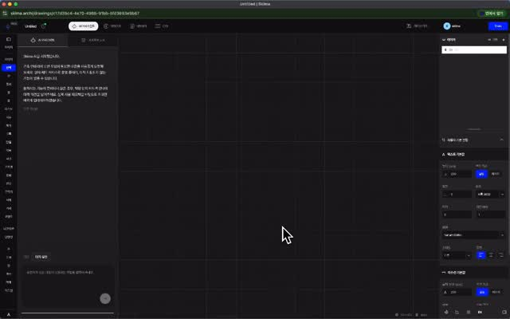
건축 설계 작업에서 지적도 불러오기와 대지분석을 수동으로 진행하는 번거로움을 해결하기 위해 스미카 CAD에 AI 어시스턴트가 추가되었다. 브이월드 연속지적도 데이터를 활용하여 대지 경계와 지적도를 자동으로 불러오고, 고급 추론 AI 모델을 통해 평면도 생성까지 요청할 수 있으며, 이러한 기능들이 설계 프로세스에 즉시 반영된다.
핵심 포인트: 핵심 성과: 브이월드 연속지적도 통합으로 지적도 자동 로드, AI 기반 평면도 생성 기능 추가로 설계 초기 단계 자동화 실현
기타 (Others)
Claude Opus 4.7 + Onshape — AI 기반 자동 CAD 모델링 33초 완성
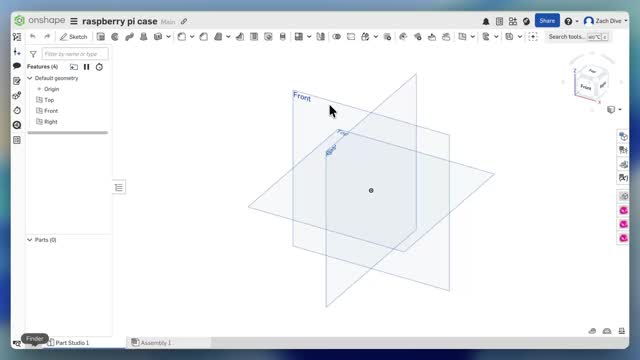
제조 업계에서 설계자들이 반복적으로 수행하는 CAD 모델링 작업이 AI로 자동화되고 있다. Claude Opus 4.7을 Onshape 플랫폼의 플러그인으로 통합하면, 자연어 명령어만으로 정확한 치수 계산, 도면 작성, 압출, 타공, 모서리 마감 등 전체 모델링 프로세스를 33초 내에 완료할 수 있다. 시각적 피드백과 자기 수정 능력을 통해 3D 모델을 검증하고 오류를 자동으로 수정하면서, 기술자의 역할이 도구 조작에서 기획과 검수로 전환되는 산업 변화를 시사한다.
핵심 포인트: 핵심 성과: 자연어 입력으로 33초 내 완전한 CAD 모델 자동 생성 및 시각적 피드백 기반 자기 수정 능력 구현으로 제조 업계의 반복적 모델링 작업 자동화 실현
🔗 threads.com/@choi.openai/post/DXSw6lBCaC1…
기타 (Others)
플랜트·조선 업계의 AX 전환: AI 기반 설계 자동화가 산업 생존을 결정
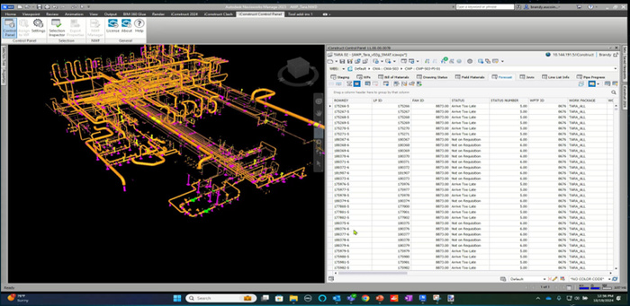
전통적인 토목·플랜트 산업의 설계 및 시공 방식이 단순 디지털 전환(DX)을 넘어 인공지능 전환(AX)으로 급속 진행되고 있다. CAD 데이터 품질 인프라 구축, AI 기반 엔지니어링, 3D 시각화 솔루션 등이 실무에 깊숙이 도입되면서 설계 자동화와 AI 시각화가 필수 경쟁력으로 부상했다. 기술 격차가 곧 입찰 경쟁력 격차로 전환되는 냉정한 현실 속에서 준비된 엔지니어들에게는 압도적 기회가 될 것으로 예상된다.
핵심 포인트: 핵심 기여: 플랜트·조선 컨퍼런스 2026의 사례를 통해 EPC 산업에서 AI/ML 기반 디지털 건설 블록과 대용량 3D 시각화 솔루션이 이미 실무 단계에 진입했으며, 토목 설계도 곧 AI 주도로 전환될 것을 시사한다.
🔗 cadgraphics.co.kr/newsview.php?pages=lect…
기타 (Others)
Claude Design — AI 기반 프롬프트 투 프로토타입 시각 작업 도구
디자인 기획부터 개발까지의 협업 과정에서 발생하는 지루함과 비효율성을 해결하기 위해 Anthropic Labs가 Claude Opus 4.7 기반의 Claude Design을 공개했다. 프롬프트 입력만으로 프로토타입과 프레젠테이션 슬라이드를 생성하고, 채팅 및 직접 수정, 슬라이더 조작으로 세밀한 디자인 조정이 가능하다. 기존 코드베이스 학습을 통한 브랜드 가이드 자동 유지와 Canva, PDF, Claude Code로의 직접 내보내기로 단일 환경에서 기획부터 개발까지의 전체 워크플로우를 통합한다.
핵심 포인트: 핵심 기여: 프롬프트 기반 프로토타입 생성과 브랜드 가이드 자동 학습 기능으로 디자인-개발 협업 프로세스를 단일 환경에서 통합하여 실무 작업 속도와 생산성을 획기적으로 향상시킨다.
🔗 anthropic.com/news/claude-design-anthropi…
기타 (Others)
Claude Design — AI로 블로그 텍스트만으로 30초 애니메이션 영상 생성
디자이너들이 픽셀 단위로 화면을 일일이 그리는 업무의 가치가 낮아지고 있다. Anthropic Labs의 Claude Design은 블로그 게시글과 트윗 같은 텍스트 입력만으로 브랜드에 맞춘 완성도 높은 애니메이션 영상을 자동 생성한다. 이로 인해 디자이너의 역할은 개별 화면 제작에서 디자인 시스템 설계, AI 컨텍스트 주입, 전략적 방향 제시 등 고차원 판단으로 이동하며, 동시에 마케터와 창업자 등 비전문가도 직접 고품질 디자인 산출물을 생산할 수 있는 시대가 열리고 있다.
핵심 포인트: 핵심 성과: 블로그 텍스트와 소셜 미디어 스니펫만으로 30초 분량의 브랜드 맞춤형 애니메이션 영상을 한 번의 프롬프트로 생성. 디자인 민주화로 비전문가도 Canva 템플릿을 벗어나 자신의 브랜드에 맞춘 고급 비주얼을 직접 제작 가능.
🔗 anthropic.com/news/claude-design-anthropi…
기타 (Others)
X-Pilot — 문서를 정확한 강의 영상으로 변환하는 AI 도구
기술 문서, 교육 자료, 매뉴얼 작성 시 정확성이 중요한 상황에서 발생하는 설명 오류 문제를 해결하는 도구. X-Pilot은 AI가 대략적으로 렌더링하는 방식이 아닌 수식, 코드, 다이어그램을 규칙에 따라 정확하게 렌더링해 문서를 강의 영상으로 자동 변환한다. 특히 오류 설명이 허용되지 않는 교육 및 기술 분야에서 높은 활용 가치를 제공한다.
핵심 포인트: 핵심 기여: 수식·코드·다이어그램을 정확하게 규칙 기반 렌더링하여 교육 및 기술 문서의 자동 영상화를 실현하며, 기존 AI 생성 방식 대비 정확도와 신뢰성을 크게 향상시킨다.
기타 (Others)